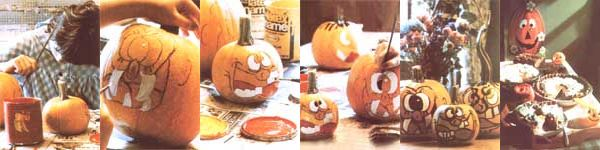

Following the axiom of "waste not, want not", here's a new slant on a Halloween tradition.
How many times have you carefully cut out the eyes and the crooked smile on your Halloween pumpkin ... and then-after a few days have passed-watched the succulent squash shrink, shrivel, mold, and rot. "But that's just the price we have to pay most folks reason. "After all, it's impossible to have a jack-o'-lantern and a pumpkin pie, too!"
Well, wait a minute ... who said you have to cut into that pumpkin? Why not simply decorate its outside, and then-after the bewitching eve of All Saints' Day-turn the inside into a scrumptious dessert or some hearty loaves of bread? True, there won't be any winking candles or firelit expressions on your Halloween ghoul ... but I'll bet your young goblins will think that small "sacrifice" is well rewarded when they bite into a delicious, moist, custardy piece of pie smothered in whipped cream!
PUMPKIN PAINTING
It's my bet that youngsters and adults alike will find that decorating a pumpkin with pens and brushes-as opposed to carving it-is easier and allows the "artist" more leeway for creativity. You can even apply your talents to both sides ... making a jack-o'-lantern with a "split personality".
I'd suggest that you begin by drawing a few practice faces on paper. Remember, though, that small, detailed features will be difficult to reproduce whether you're painting or carving. When you come up with a design that you like, go on to transfer it to your clean, dry squash with a pencil. After it's drawn the way you want, go over the pencil lines with a black felt-tipped marker.
Next, round up some small paintbrushes and choose your colors. I feel that a combination of bright hues in both light and dark shades generally looks most effective. You can use poster, powder, or acrylic paints, felt-tipped markers, or even interior house paint. (The pumpkins shown here were decorated with glossy latex enamels.) Water-based paints, of course, allow an easier cleanup ... but do be sure that any coloring medium you choose is lead-free, to avoid possible contamination of the pumpkin meat.
Start painting those features for which you've planned to use white or the lightest color, then allow each area to dry until it's tacky before going on to the next darker shade. Continue in this manner until you finally get to black, which can be used to darken the original outlines and to add such details as eyes or hair. Then let your creation dry thoroughly (overnight will usually do) before adding any additional coats of paint.
You can also create facial features by using toothpicks to attach fruits and vegetables to your pumpkin. Cranberries, small gourds, raisins, corn kernels, carrots, cucumbers, celery, and green beans can all be employed to make unique jack-o'-lanterns. However, should you plan to later cook any pumpkin that has toothpick holes, do so as soon after the holiday as you can ... to prevent rotting. Your painted versions, on the other hand, can be stored in the root cellar alongside their undecorated squash cousins, and they'll keep for months if the skins aren't broken.
FROM GOBLIN TO GOURMET GOODIES
When you're ready to prepare pumpkin puree, remove as much paint as possible (a metal pot scrubber works well) from the squash before cutting it in half. [EDITOR'S NOTE: Better yet, completely remove the skin from paint-covered sections.] Then scrape out the seeds and stringy fibers with a soup spoon. Next, cut the pumpkin into four or six uniform pieces, place the sections on a greased cookie sheet, and bake them at 350'F until they're tender (it'll take about an hour).
If you prefer to cook the pumpkin whole, cut an opening in its top ... remove the pulp and seeds ... replace the "cap" . . . and bake the squash in a shallow pan-again at 350°F?for 1-1/2 hours or until it's tender. Then remove the pumpkin from the oven and pour off any collected liquid. (You can also simply boil I " pieces of the squash over medium heat for 30 to 45 minutes or until they're tender.)
No matter how you cook your jack-o'-lantern, though, be sure to cool it quickly in cold water and to drain it thoroughly. Then cut the meat away from the skin and strain it through a sieve or colander, or use a food mill or a blender, to remove the lumps and fibers.
If you prepare more pumpkin puree than you can use in one cooking session, just pack it into pint or quart jars, leaving a 3/4" space at the top of each container, and process the jars in a pressure canner at 10 pounds of pressure (allow 65 minutes for pints and 80 minutes for quarts). The puree will also keep for several months in plastic containers in the freezer, or for a day or two in the refrigerator.
And now comes the fun part!
PERFECT PUMPKIN DISHES
The following recipes are favorites with my family, and I hope they'll be pleasing to yours, too!
PUMPKIN PIE
To make a failproof piecrust, use a pastry cutter or a fork to cut together 1/2 cup of margarine, butter, rendered lard, or vegetable shortening, 2 cups of whole wheat flour, and 1/4 teaspoon of salt ... until the mixture forms pea-sized balls. Now, in a small bowl, combine I large egg, I tablespoon of vinegar (plain or cider), and 3 tablespoons of cold water. Add this to the flour mixture, a little at a time, until the dough holds the form of a ball. (If needed, add more cold water, but do so a drop at a time.), Finally, divide the dough into two balls, roll each one out on a breadboard or wax paper that you've dusted with flour, and use them to line two 9 " pie plates.
To prepare the filling, mix 4 well-beaten eggs, 3 cups of pumpkin puree, 1/2 cup of honey, 1/2 cup of molasses, I teaspoon each of salt, cinnamon, and ginger, 1/2 teaspoon of nutmeg, 1/4 teaspoon of cloves, and 3-1/2 cups of light cream. Pour this into the unbaked crusts, and bake the pies at 425°F for 15 minutes. Then reduce the temperature to 350°F and let them cook for another 45 or 50 minutes, or until the custard is set and a knife inserted near the center comes out clean. To avoid overcooking the pies, remove them from the oven while their centers are still slightly liquid (they'll finish baking as they cool). Cool them on racks in a draft-free spot, and store them, covered, in the refrigerator ...
until you're ready to serve the treats with whipped cream.
PUMPKIN CHEESECAKE PIE
To make the crust for this special dessert, cream 1/3 cup of butter with 1/3 cup of brown sugar. Then add I medium egg and beat the ingredients with a fork until they're fluffy. Next, mix in 1-1/4 cups of whole wheat flour until you've produced a crumbly dough. Press this on the bottom and sides of a greased 9 " to 10 " pie plate, 9 " round cake pan, or shallow 9" springform pan, and bake the crust at 400°F for 5 minutes (don't overcook it) before removing it from the oven to cool.
Now, combine 16 ounces of softened cream cheese and 1 cup of honey, and mix them until the combination is fluffy and well blended. Then add 2 cups of pumpkin puree, I teaspoon of cinnamon, and 1/4 teaspoon each of ginger and nutmeg, and?again-stir the ingredients well. With that done, pour the filling into the crust and bake the cheesecake at 350°F for 50 to 60 minutes, or until it's firm in the center. Finally, cool it on a rack ... chill it ... and serve it garnished with whipped cream.
PUMPKIN BREAD
In a large bowl, combine I cup of vegetable oil, 2 cups of brown sugar, 1 cup of honey, 1/2 cup of molasses, and 3 cups of pumpkin puree. Then, in another bowl, mix 2-1/2 cups of unbleached white flour, 3 cups of whole wheat flour, 4 teaspoons of baking soda, 1 teaspoon of salt, 2 teaspoons of cinnamon, and 1/4 teaspoon of cloves. Add the dry ingredients to the pumpkin mixture and stir everything well (it'll be a bit stiff). Now, add 2 cups of chopped nuts, 2 cups of raisins, and 1 cup of chopped dates. Pour the batter into three greased 5" X 9" loaf pans, and bake the breads at 350°F for 55 to 65 minutes, or until a toothpick inserted into each of their centers comes out clean. Then remove the loaves from the pans and cool them on a rack. Once the breads reach room temperature, wrap them in aluminum foil and chill them. Serve your pumpkin bread in thin slices spread with softened butter or cream cheese (or both).
I can almost guarantee that, as you cut into any one of these treats, you'll be glad that you spared the knife when creating your jack-o'-lantern ... and saved that blade for serving it!
|
 Various stages of the painting process. Kathy's pumpkin recipes make pie, cheesecake pie, and bread. |
|
|